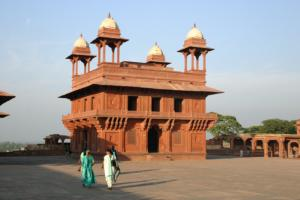

Le 29 novembre 2004,
Toujours en bus local, nous arrivons à Fatehpur Sikri, une cité fantôme construite puis abandonnée par un empereur Moghol, il y a plus de cinq siècles. La grandeur du site et surtout sa splendeur, contrastent avec le petit village poussiéreux, sans cesse traversé par les bruyants "Tata" (camions locaux), qui s’est installé au pied des ruines.
 Après quelques difficultés pour trouver un hôtel et une ballade improvisée en moto (aves les sacs sur le dos), nous sommes saisis par le calme et surtout les couleurs de l’ancienne ville fortifiée : mosquée, étables, divers palais de grès rouge sont mis en valeur par un ciel bleu intense traversé par de magnifiques perroquets. La magie continue pendant le repas à l’hôtel, durant lequel un musicien tape sur des tambours traditionnels tout en chantant une mélopée envoutante. Il nous explique que tous, dans sa famille, sont musiciens de père en fils depuis l’époque de l’empereur Ackbar, le bâtisseur de la cité fantôme !
Michaël
Bonjour, En cherchant sur le web des infos de voyages, je suis tombé sur votre site Du coup je vais suivre vos aventures avec attention. Si vous souhaitez des infos sur l’amérique latine n’hésitez pas à me contacter par mail. En tout cas bravo pour votre projet. A plus Luc
PS : il n’y a pas de galerie photos, est ce normal ?
Coucou mes petits chéris,
C’est vraiment génial de suivre votre parcours, on s’y croirait presque...vous lire tous les jours donne un grand rayon de soleil à notre grisaille française...Je suis heureuse de voir que vous faites de belles rencontres humaines...Votre expérience est très encourageante pour ma venue prochaine en Inde...
Gros bisous
Isa
{kind=link}